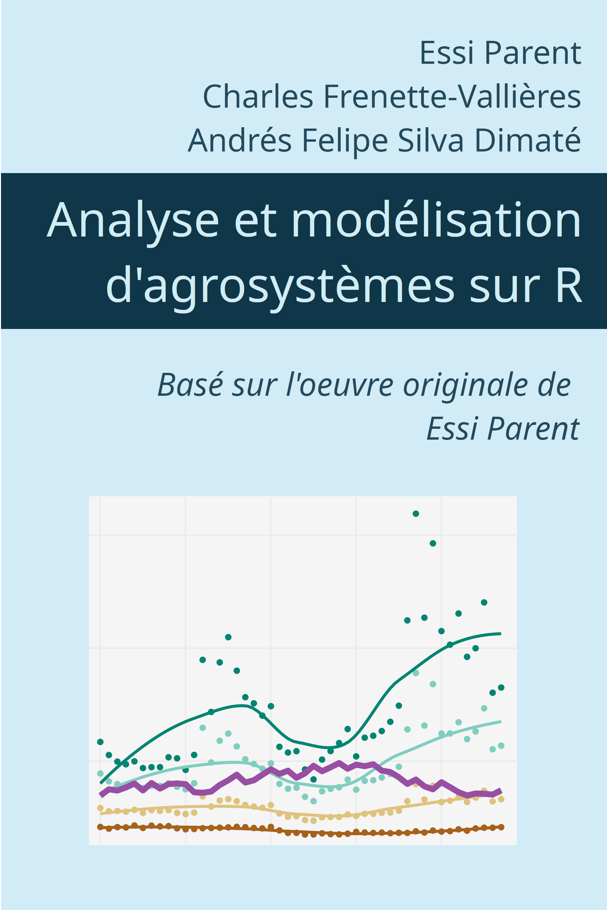

Analyse et modélisation d’agroécosystèmes sur R
Préface

Ce cours a pour objectif de former les étudiants gradués en génie agroenvironnemental, génie civil, génie écologique, agronomie, biologie, foresterie et écologie en analyse et modélisation de systèmes vivants. Les sujets traités sont l’introduction au langage de programmation R, l’analyse statistique descriptive, la visualisation, la modélisation inférentielle, prédictive et déterministe.
Ce manuel est basé sur le cours Analyse et modélisation d’agroécosystèmes de Essi Parent (voir licence au bas de la page). La version proposée ici tient compte des mises à jour des différents outils présentés dans le manuel original. Elle est construite au format Quarto par Charles Frenette-Vallières et Andrés Felipe Silva Dimaté
Voici la liste des modifications principales apportées jusqu’à présent par rapport à la version originale :
- Migration du livre complet au format Quarto (versus RMarkdown pour l’ancienne version)
- Remplacement des pipes de tidyverse
%>%par la version|>introduite en 2021 dans r-base - Correction des liens internet qui ont changé d’adresse
- Utilisation des nouvelles éditions des manuels de référence (par exemple R for data science (2e) ou Forecasting: Principles and Practice (3rd ed))
- Remplacement de certaines fonctions qui ne sont plus maintenues (ex.
slice_sample()remplacesample_n()) - Remplacement de certains modules (ex.
renvremplacePackrat)
Table des matières
- Introduction
- La science des données avec R
- Organisation des données et opérations sur des tableaux
- Visualisation
- Science ouverte et reproductibilité
- Introduction à Python
- Biostatistiques
- Introduction à l’analyse bayésienne en écologie
- Régression
- Explorer R
- Association, partitionnement et ordination
- Détection de valeurs aberrantes et imputation de données manquantes
- Les séries temporelles
- Introduction à l’autoapprentissage
- Les données géospatiales
- Modélisation de mécanismes écologiques
Analyse et modélisation d’agroécosystèmes de Essi Parent est mis à disposition selon les termes de la licence Creative Commons Attribution - Pas d’Utilisation Commerciale - Partage dans les Mêmes Conditions 4.0 International


Fondé(e) sur une œuvre à https://github.com/essicolo/ecologie-mathematique-R/.